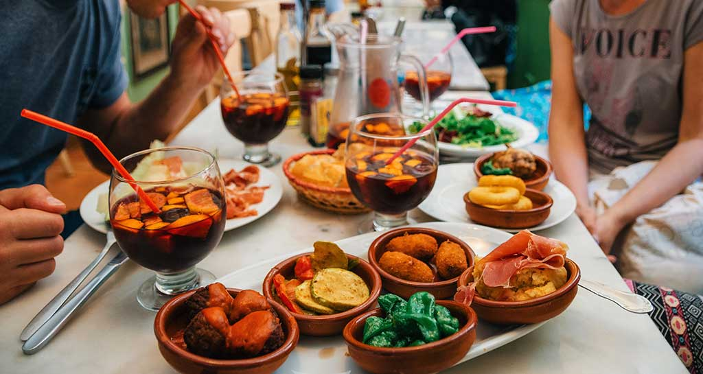

Countries I Want to Visit
Japan

- Trying a traditional onsen

- Cherry Blossom Festival

- Tokyo
- Kyoto

Iceland
- Aurora Borealis

- Waterfalls, Volcanos, Geysers, and more!

- Blue Lagoon
- Glaciers

Italy
- The Dolomites

- Food and Wine

- Rome, Tuscany, and Venice
- Art and History

Spain
- Madrid
- Valencia

- Tapas and Sangria

- History and Art

Australia/New Zealand
- Great Barrier Reef

- More sheep than people in New Zealand

- Cool and unique wildlife
There are ∞ other places that I would like to visit, so hopefully I get the chance to see them all!